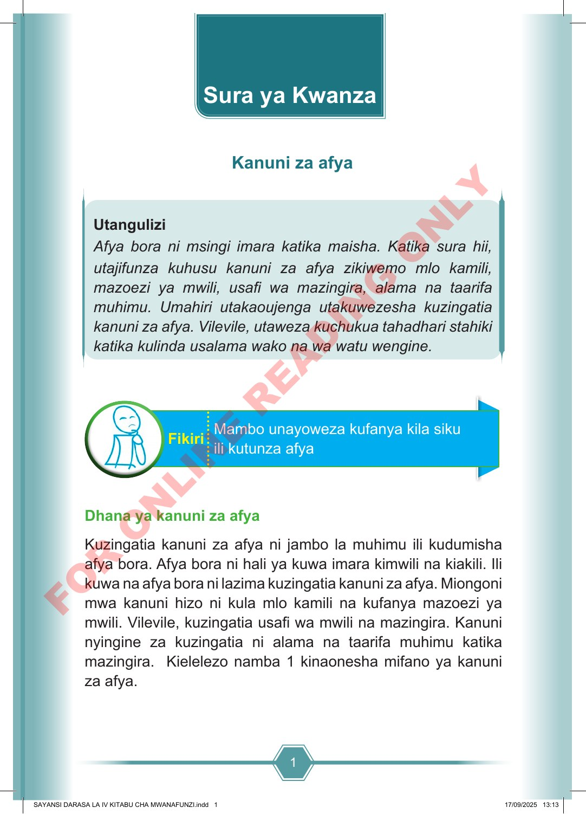

1 Utangulizi Afya bora ni msingi imara katika maisha. Katika sura hii, utajifunza kuhusu kanuni za afya zikiwemo mlo kamili, mazoezi ya mwili, usafi wa mazingira, alama na taarifa muhimu. Umahiri utakaoujenga utakuwezesha kuzingatia kanuni za afya. Vilevile, utaweza kuchukua tahadhari stahiki katika kulinda usalama wako na wa watu wengine. Mambo unayoweza kufanya kila siku ili kutunza afya Fikiri Dhana ya kanuni za afya Kuzingatia kanuni za afya ni jambo la muhimu ili kudumisha afya bora. Afya bora ni hali ya kuwa imara kimwili na kiakili. Ili kuwa na afya bora ni lazima kuzingatia kanuni za afya. Miongoni mwa kanuni hizo ni kula mlo kamili na kufanya mazoezi ya mwili. Vilevile, kuzingatia usafi wa mwili na mazingira. Kanuni nyingine za kuzingatia ni alama na taarifa muhimu katika mazingira. Kielelezo namba 1 kinaonesha mifano ya kanuni za afya. Sura ya Kwanza Kanuni za afya SAYANSI DARASA LA IV KITABU CHA MWANAFUNZI.indd 1 SAYANSI DARASA LA IV KITABU CHA MWANAFUNZI.indd 1 17/09/2025 13:13 17/09/2025 13:13 F O R O N L I N E R E A D I N G O N L Y